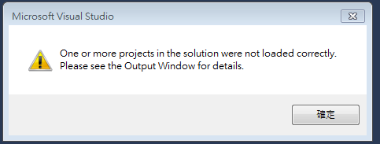
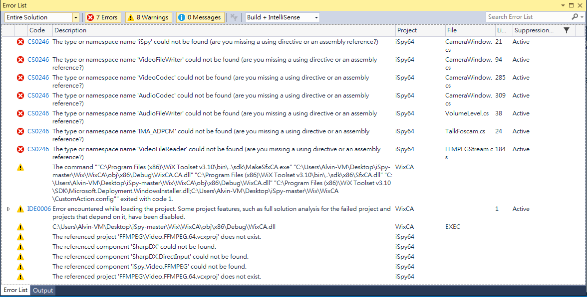
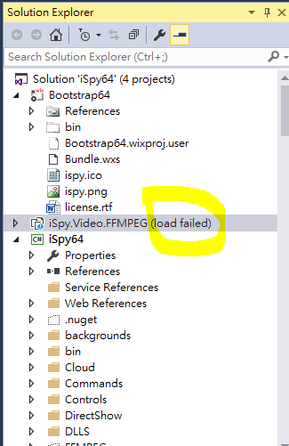

2016/12/24 - How to compile iSpy source code via VS2015 on my PC¶
Preparation¶
- Windows OS (I run it on Windows 10 64bits)
- Download iSpy source code on Github
- Vistual Studio 2015
- For building the Setup project [Wix Toolset 3.10+] must be installed. (Make sure you restart Visual Studio after installing)
Guide (64 bits)¶
- Don’t open and compile the file before doing these steps below.
- Move the Video.FFMPEG.64.vcxproj and Video.FFMPEG.vcxproj away from /iSpy-master/FFMPEG. Don’t delete them, just keep them in another directory.
- Copy all files under the path /iSpy-master/FFMPEG/ffmpeg64/bin and paste to /iSpy-master/FFMPEG/bin .
- Copy the dll: /iSpy-master/FFMPEG/ffmpeg64/bin/iSpy.Video.FFMPEG.dll * and paste to */iSpy-master/FFMPEG/bin. (If iSpy.Video.FFMPEG.dll is already existed in /iSpy-master/FFMPEG/bin , just delete or replace it. )
- Open .sln file /iSpy-master/iSpy64.sln (you may see the error message box like the picture1 below, just click “OK”). Press F5 to build and run the project , it would be failed and show error message like the picture 2 below. That’s all right!
Picture 1:

Picture 2 :

- Now move back Video.FFMPEG.64.vcxproj and Video.FFMPEG.vcxproj back to /iSpy-master/FFMPEG which moved away in step 1.
- Press F5 to run again, and iSpy finally shows up!
Why we need these wired steps?¶
According to the readme , the FFMPEG project requires that visual studio 2010 is installed. FFMPEG project on visual studio 2015 is considered to an error because of “Not Safety”. So we have to do the steps above and do not load this project in our solution explore( in solution, we can unload iSpy.Video.FFMPEG project ).
